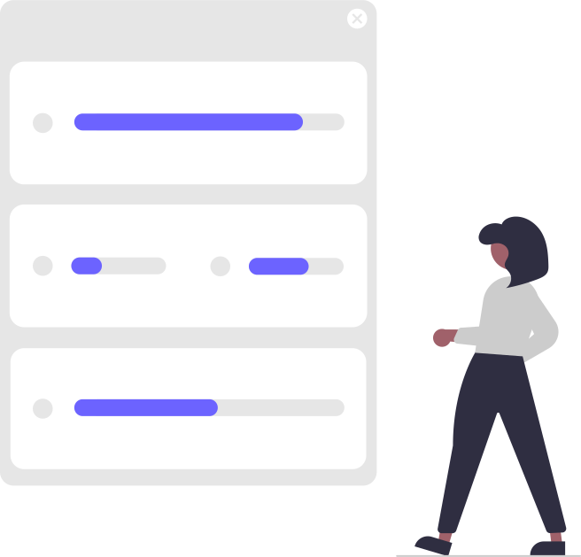

Acerca de mi
Dentro de mis objetivos esta el desarrollarme en un entorno de trabajo que me permita aplicar mis conocimientos en la resolución de problemas. Adquirir experiencia para mejorar continuamente y de este modo crecer de manera personal y profesional.
Habilidades

Profesionales
- Comunicación efectiva
- Servicio y atención al cliente
- Eficiente
- Liderazgo
- Creativa
- Resolución de problemas
- Trabajo bajo presión
- Rápido aprendizaje

Técnicas
- Paquetería de office
- SAP
- JavaScript
- Java
- Html
- CSS
- SQL
Experiencia
Ingeniero de Validación
Agosto 2020- Noviembre 2021
Ingeniero de Documentación y Validación
Mayo 2019 - Agosto 2020
Técnico de diagnóstico
Marzo 2018 - Mayo 2019
Formación
Educativa
Centro Universitario de Ciencias Exactas e Ingenierías
- Ingeniería Biomédica 2016-2018
- Ingeniería en Comunicaciones y Electrónica 2015-2016
Complementaria
Bootcamp Generation
Java Fullstack Developer 2021-2022
Logros
Ponencia
Ponente "1er Foro Regional de Innovación Tecnológica para la Rehabilitación Física" por el proyecto: Diseño de dispositivo basado en resonancia estocástica, generador de ruido a color para rehabilitación del sistema nervioso.
Sinotek
Calificación , pruebas en sitio y capacitación de equipos en laboratorios de Argentina(IBC lab) y Chilenos(Biosano)

Flex Sur
Capacitadora de nuevos técnicos de diagnóstico y analista inmediata de fallas en equipos de pruebas